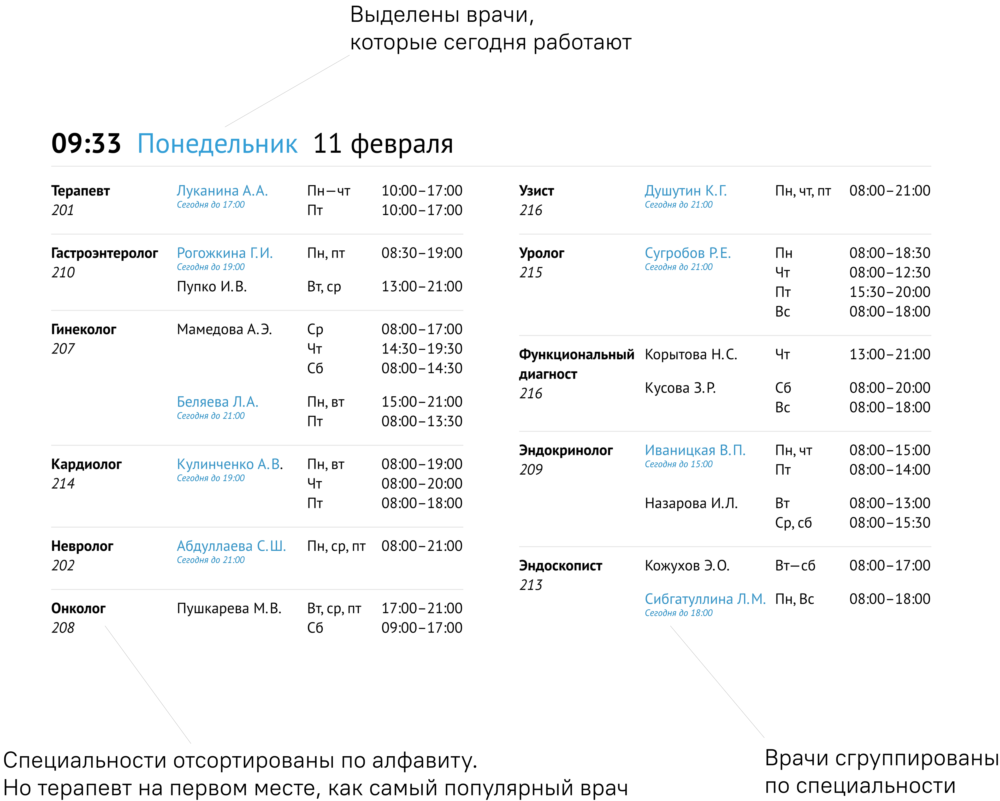

Переверстка таблицы c расписание врачей
 Подробный разбор в блоге
Подробный разбор в блоге
Изначальная таблица и ее проблемы
Таблица должна ответить на вопрос «когда принимает врач?».
Получить ответ сложно из-за оформления таблицы — ее физически больно читать. Врачи в таблице не отсортированы, а одинаковые специальности не сгруппированы. Из-за этого приходится бегать глазами по таблице.
Моя таблица и решение проблем
Теперь таблица не рябит в глазах. Можно найти нужную специальность, сравнить врачей и выбрать подходящее время.